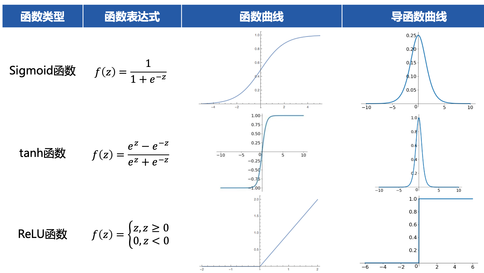
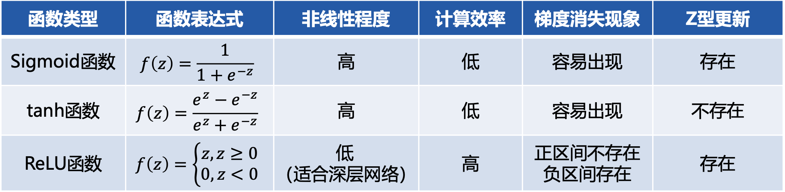
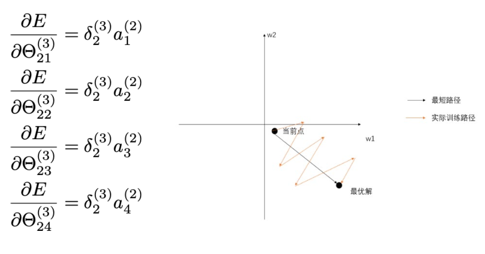
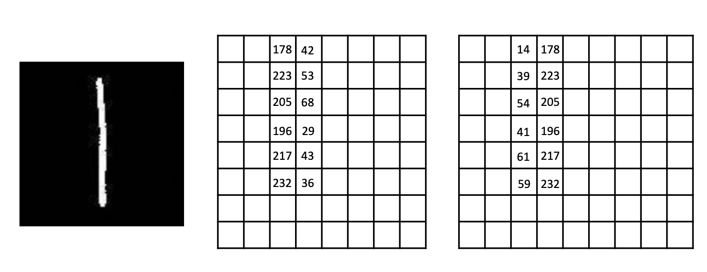
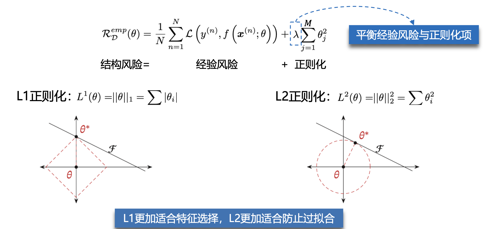
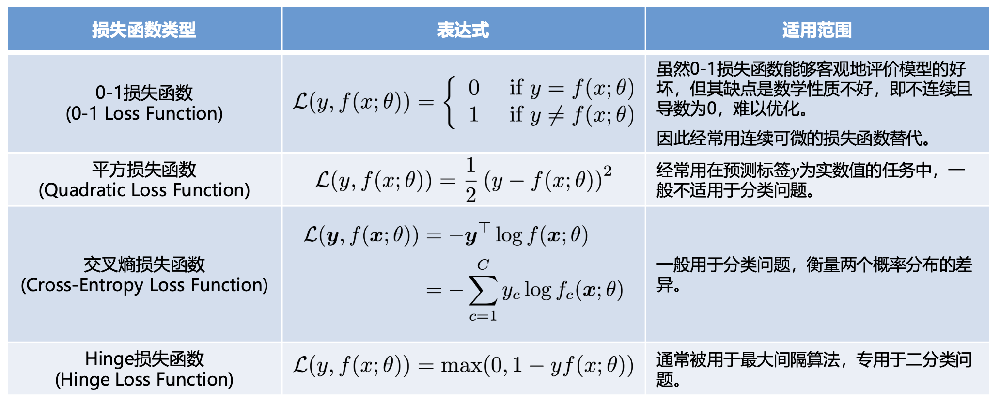

基础知识
-
极大似然估计
- $$p(x|\theta)$$
- 如果\(\theta\)是已知的，则该函数叫做概率函数(Probability)，描述的是不同样本点 出现的概率；
- 如果\(x\)是已知的，则该函数叫做似然函数(Likelihood)，描述的是对于不同的模型参数，出现样本点\(x\)的概率。
-
反向传播
- TODO
-
激活函数
- 作用：对输入空间进行“弯曲（非线性变换）“，提升神经网络的非线性表达能力。
- 设计原则
- 非线性函数，且连续可导
- 函数及其导函数易于计算
- 导函数的值域以及分布
- 典型函数


- Z字型下降

- 如果输入神经元的数据总是正数（无论什么数值经过sigmoid之后都是正数），那么上图的\(a_{i}^{(j)}\)都是正数。梯度的符号取决于\(\delta _{2}^{(3)}\)，要么全部是正数，要么全部是负数。但很多时候，\(\Theta _{ij}^{(l)}\)的梯度更新方向是异号的，类似于右下角图片的黑色线段，同号就会导致更新需要花费很多步来回迭代到最优解（参数的运动路线像字母Z）
- Z字型下降
-
卷积
- 感受野(Local Receptive Fields)：卷积神经网络每一层输出的特征图(feature map)上的像素点在原始图像（网络开始的输入图像）上映射的区域大小
- Max Pooling的作用
- 减少计算量，减少内存消耗
- 提高感受野的大小
- 减少参数数量
- 增加平移不变性

-
模型的评价
- 期望风险(Expected Risk)：评估当前模型（也就是映射函数）在真实数据分布下的预测损失Loss的期望。前提是已知真实数据分布下的误差，那也就是说模型的真实误差。
- 我们所能得到的观察数据是真实数据的一个真子集，因此可以利用模型在观察数据上的误差来近似反应模型在真实数据上的拟合能力，将这个误差称为经验误差。将在所有观察数据中得到的平均误差称为经验风险(Empirical Risk)
- 过拟合是因为模型在训练数据集上拟合能力太强，反而对于新的测试数据表现不佳。根据奥卡姆剃刀原则需要限制模型的能力(模型的参数量)，从而提高泛化能力，因此，我们追求的是结构风险最小化。
- 奥卡姆剃刀原则：如无必要，勿增实体。简单的模型泛化能力更好，如果有两个性能相近的模型，我们应该选择更简单的模型。

-
损失函数

-
偏差方差
- 为了避免过拟合，我们经常会在模型的拟合能力和复杂度之间进行权衡。
- 方差一般会随着训练样本的增加而减少。当样本比较多时，方差比较少，这时可以选择能力强的模型来减少偏差。
- 随着模型复杂度的增加，模型的拟合能力变强，偏差减少而方差增大，从而导致过拟合。